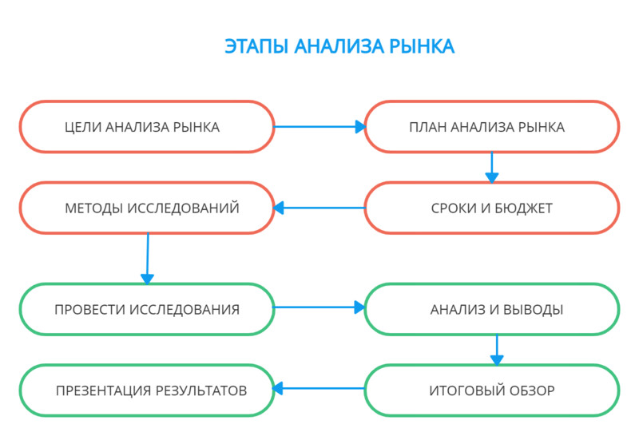

Виртуальная лабораторная работа
Амангелдиев Нурбол
Создание бизнес-проекта в Google диске
Распределенные и облачные вычисления
Введение:
Цель лабораторной работы: заключается в
обучении навыкам написания бизнес-плана, создание рекламной
брошюры, написания сопроводительного письма, учета бухгалтерии
в Excel таблице и создания первоначального сайта для нашего бизнеса.

Далее представлены примеры выполнения перечисленных работ, также
ссылка на готовые проекты.
Бизнес-план:
Бизнес-план — что это?
Бизнес-план — документ, в котором проводятся необходимые расчёты и анализ,
раскрывающий перспективы нового проекта. В нем отражаются этапы развития,
анализируются возможные риски и внешние факторы, которые могут оказывать
существенное воздействие на бизнес.
В том числе в бизнес-плане раскрываются следующие основные аспекты:
сведения о компании или предпринимателе, запускающем новый проект;
описание реализуемых товаров, предоставляемых услуг или выпускаемой продукции,
составляющей основу планируемого бизнеса;
маркетинговый анализ;
расчёты, характеризующие перспективы проекта.
Для чего нужен бизнес-план
Цели составления бизнес-плана могут быть разными. Его делают, например, для:
подготовки обоснования для получения субсидий и государственных грантов под
определённые проекты;
оформления банковского кредита;
получения средств инвесторов.
Содержание бизнес-плана
В бизнес-плане должны быть максимально полно раскрыты все факторы, влияющие на
реализацию проекта, его перспективность. Необходимо дать развернутую оценку
ожидаемого финансового результата. В документе необходимо отразить риски, с
которыми может столкнуться бизнес, предусмотреть меры, которые помогут достичь
установленных планом показателей.
Для этого в бизнес-плане должны содержаться такие основные разделы:
Резюме. Обязательный раздел, в котором кратко описывается бизнес, даётся
характеристика планам. Объём резюме — не более 1-2 страниц.
Информация о компании. Детализируются данные о компании, которая внедряет бизнес-проект.
Анализ рынка. Напишите, на какой территории будете осуществлять реализацию, на какую целевую
аудиторию ориентируетесь, проанализируйте конкурентов.
Компания и команда. Необходимо детально описать команду, кадровый потенциал компании.
Описание продукта. Сделайте анализ реализуемого продукта или предоставляемой услуги с учётом потребностей
потенциального потребителя.
Маркетинг и продажи. Подготовка маркетингового плана ведения бизнеса.
Финансирование. Составление финансового плана.
Экономические и финансовые показатели. Расчёт основных показателей, которые продемонстрируют,
насколько бизнес будет эффективным.
Приложения. Справочные сведения, иллюстративные и другие данные, дополняющие информацию основных разделов.

Создание сайта:
В эпоху цифровизации любой вид сайта должен быть в всемирной сети. Это
поможет вашим клиентам легко находить вас, также дает новым пользователям
начальное представление о вашем бизнесе. Для каждого вида бизнеса могут
различаться и виды сайта. Для маленького бизнеса легко сойдут лендинг страницы
для рекламы. А для крупных бизнесов потребуется полноценные сайты удобного управления.
Есть 3 вида создания сайтов:
Одностраничный
На конструкторе
Полноценный корпоративный
Для большинства пользователей создания сайта на конструкторе является самым
выгодным способом.
Одностраничные сайты и полнофункциональные корпоративные сайты обычно пишут на html/css/js как
верстку, либо же на php или других языках программирования.
Самые знаменитые конструкторы сайтов:
WIX
Weebly
uKit
Google Sites
Jimbo
Webstarts
Сопроводительное письмо:
Приветствие и обращение. По умолчанию начинать коммуникацию лучше с
обращения на «вы». Если сомневаетесь, с какой буквы писать «вы» или «Вы»,
обратите внимание на то, какой вариант использует собеседник, и подстройтесь.
Если же хотите перейти на «ты», делать это нужно по обоюдному согласию и лучше
всего во время устной коммуникации. Желательно, чтобы к этому моменту у вас уже
была история взаимодействия.
Также не забывайте обращаться к собеседнику по имени или по имени и отчеству,
если адресату так удобнее или он выше по статусу.
В качестве приветствия используйте стандартное «здравствуйте», которое не зависит
от времени суток или часовых поясов.
Основная часть. Еще один важный момент — структура текста. От того, как вы расположите
информацию в письме, зависит ответ, который вы получите. Существует так называемый принцип
пирамиды, который предполагает, что в начале вы пишете все самое важное, а уже потом вдаетесь в детали.
Заключение. В конце письма нужен четкий призыв к действию — чего вы ожидаете от собеседника.
Без этого у адресата возникнет вопрос «и что дальше?» Если он не разберется, что делать, вряд ли он
быстро ответит на ваше письмо.
Рекламная брошюра:
Далее нам нужно создать рекламную брошюру нашей компании. Его также
нужно делать на Google docks. Буклет должен содержать ровно столько информации, сколько
нужно для совершения получателем буклета целевого действия. То есть, это вы должны решить,
какое вам нужно целевое действие, и исходя из этого – наполнить буклет текстом, фотографиями
и картинками.
В отличие от билбордов или рекламы в журналах, буклет – то инструмент для конкретного действия, то есть, использование буклета более рационально, чем, например, использование наружной рекламы.
Обычный рекламный буклет, целью которого является совершение покупки, обычно содержит:
Присоединение;
Информацию об объекте рекламирования;
Информацию о продавце объекта, контакты;
Описание способа приобретения;
Условия приобретения объекта;
Призыв к действию;